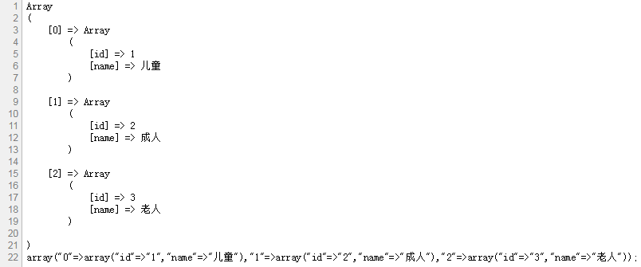

将php数组转成可以在php上面运行的编程代码，支持一维及多维数组

<?php
//一维数组
$test1 = array(1,2,3);
//二维数组
$test2[0] = array(
'id' => '1',
'name' => "儿童"
);
$test2[1] = array(
'id' => '2',
'name' => "成人"
);
$test2[2] = array(
'id' => '3',
'name' => "老人"
);
//多维数组
$test3 = array($test1,$test2);
//递归转换
function array_tocode1($array)
{
if(is_array($array)){
$str = "array(";
foreach($array AS $key=>$value)
{
$str .= '"'.$key.'"=>'.array_tocode1($value).',';
}
$str = substr($str,0,strlen($str)-1);
$str .= ')';
return $str;
}else{
return '"'.$array.'"';
}
}
//输出最后一个分号
function array_tocode($array)
{
$array = array_tocode1($array).';';
return $array;
}
print_r(array_tocode($test1));
echo "<br />";
print_r(array_tocode($test2));
echo "<br />";
print_r(array_tocode($test3));
?>